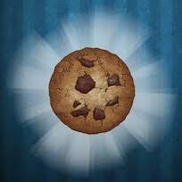

<html></html> 
<head>
    BETA!!!! Fa2a.github.io/mathsfun/betasite
         <style>
body {
    
background-color: #702963;
}
    <div>                       lazy code!!!111
             
</style>
    <style>    
  .block {
  display: block;
  width: 40%;
  border: none;
  background-color: #04AA6D;
  color: white;
  padding: 14px 28px;
  font-size: 16px;
  cursor: pointer;
  text-align: center;
}
 .container {
      border: 1px solid black;
      height: 200px;
      position: relative;
    }

    button {
      position: absolute;
      left: 50%;
      transform: translateX(-50%);
    }
</div>
 </style>
  <p style="text-align:center;"> 

</p>
    
    <button class="block"onclick="location.href='https://fa2a.github.io/mathsfun/mathsgames/cc/index.html'">Play This Course</button>
    <style>
.block:hover {
  background-color: #ddd;
  color: black;   
 {
    #container {
   position: center;
  width: 100px;
        
<head>       
    <style>
     
      div {text-align: center;}
      h2 {text-align: center;}
      h3 {text-align: center;}  
   </style>
   <body>
        <h2>Games Infomation:</h2>
      <div>-</div>
      <h2>Games Infomation</h2>
        <h2>Cookie Clicker is an incremental web-browser game developed by Orteil. The goal of the game is to produce as many cookies (by clicking on the Big Cookie and buying buildings to produce them) as you can.</h2>
        <h2>Developers: DashNet and Julien Thiennot</h2>
       
       <style>
       h2 {text-align: center;}
           
           
   </body>
    <style>       
<body>

